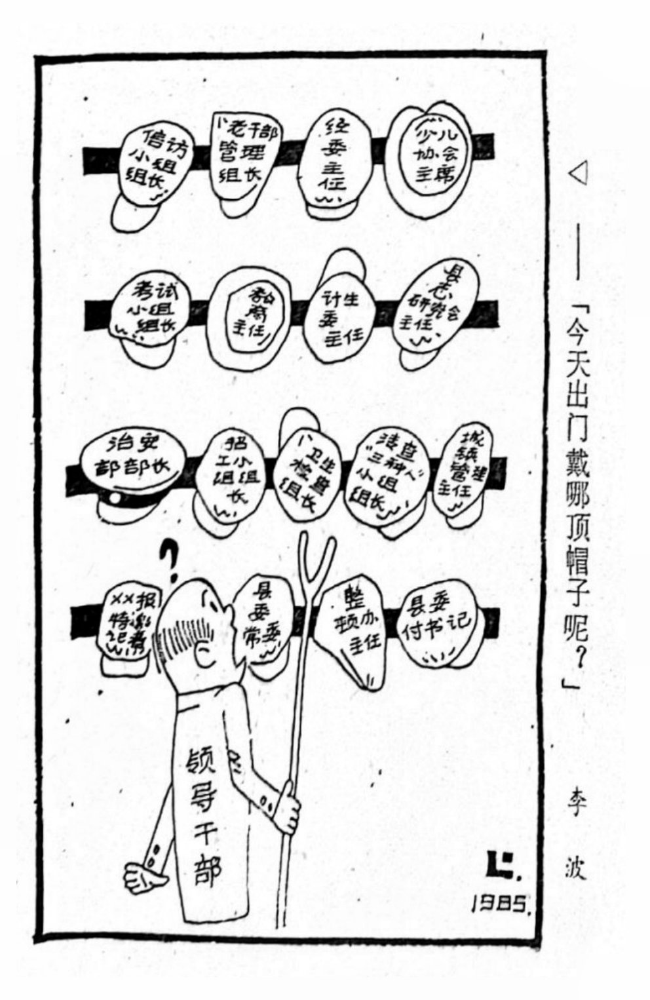

李波 《人事》1985年第3期（总第3期），第44页
今天出门戴哪顶帽子呢？
Which Hat Shall I Wear Today?
- Caption
- ——今天出门戴哪顶帽子呢？
—Which hat shall I wear when I go out today? - Text in the drawing
- 信访小组组长 / 老干部管理组长 / 经委主任 / 少儿协会主席 / 考试小组组长 / 教育主任 / 计生委主任 / 县志研究会主任 / 治安部部长 / 招工小组组长 / 卫生检查组长 / 法宣“三种人”小组组长 / 城镇管理主任 / ××报特邀记者 / 县委常委 / 整顿办主任 / 县委付书记 / 领导干部
Head of the petitions group / Head of veteran-cadre management / Director of the economic commission / Chairman of the children's association / Head of the examinations group / Director of education / Director of the family-planning commission / Director of the county-gazetteer society / Head of public security / Head of the recruitment group / Head of hygiene inspection / Head of the group investigating the “three kinds of people” / Director of town management / Special correspondent of XX newspaper / County Party standing committee member / Director of the rectification office / Deputy county Party secretary / Leading cadre - Description
- A leading cadre, forked pole in hand, scratches his head before four racks of caps, each labeled with one of the posts he holds at once — from deputy county Party secretary to chairman of the children's association.
- Note
- 兼职, holding many posts concurrently, was a common target of the 1980s reforms. The “three kinds of people” (三种人) were those who rose through rebellion in the Cultural Revolution, then being screened out of leadership.
- Artist
- Li Bo 李波
- Published in
- 《人事》1985年第3期（总第3期）, p. 44
- Themes
- Bureaucratism · Overstaffing and overlapping agencies · Privilege

Cite
Li Bo, “今天出门戴哪顶帽子呢？” [Which Hat Shall I Wear Today?], Renshi (Personnel) 《人事》, 1985, no. 3, p. 44.